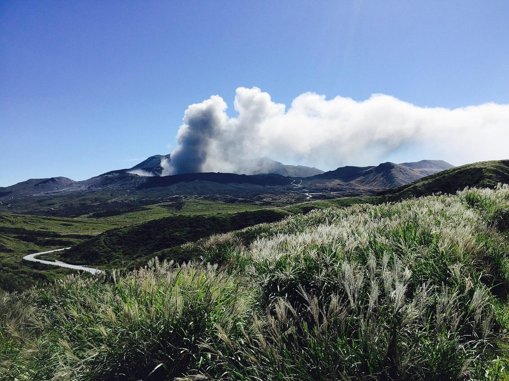

About
店のこと
このページの文章は、確認できた情報が少ないため、制作側が想像して書いたものです。実際のお店の考えや内容とは異なる場合があります。
確認できていること
千葉県東金市東岩崎にある、サンピア東金1階の喫茶店です。電話はなく、Instagramのアカウントがあります。営業時間・定休日・メニュー・価格・ご予約・駐車場は、現時点で確認できていないため「準備中」としています。
字をながめて(制作側の連想)
「萩」は草冠に「秋」。一般に、日本で作られた字(国字)とされています。「野」は、ひらけた土地を表す字。店名の由来は分かりませんが、制作側はこの二つを重ねて、秋の野原のような色合いでこのページを組みました。

こんなひとときを想像して(制作側の想像)
ビルの一階にある、小さな喫茶店。扉を開けると、湯気の立つカップが静かに迎えてくれる。そんな場面を、制作側は思い描いています。お店の雰囲気を示すものではなく、あくまで想像です。


写真は東金市の風景ではありません。野の花のイメージとして選んだ、国外で撮影されたものです。